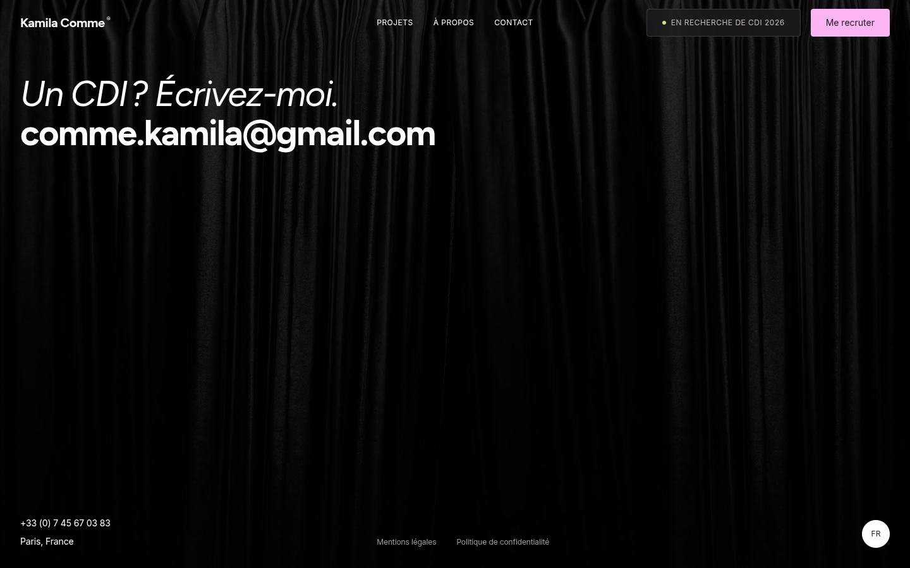
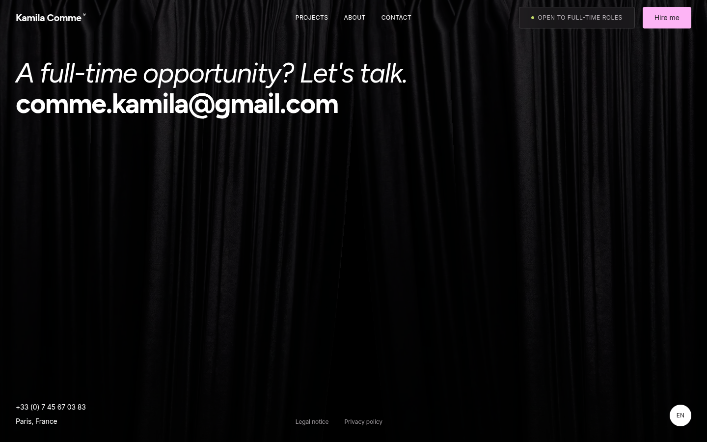
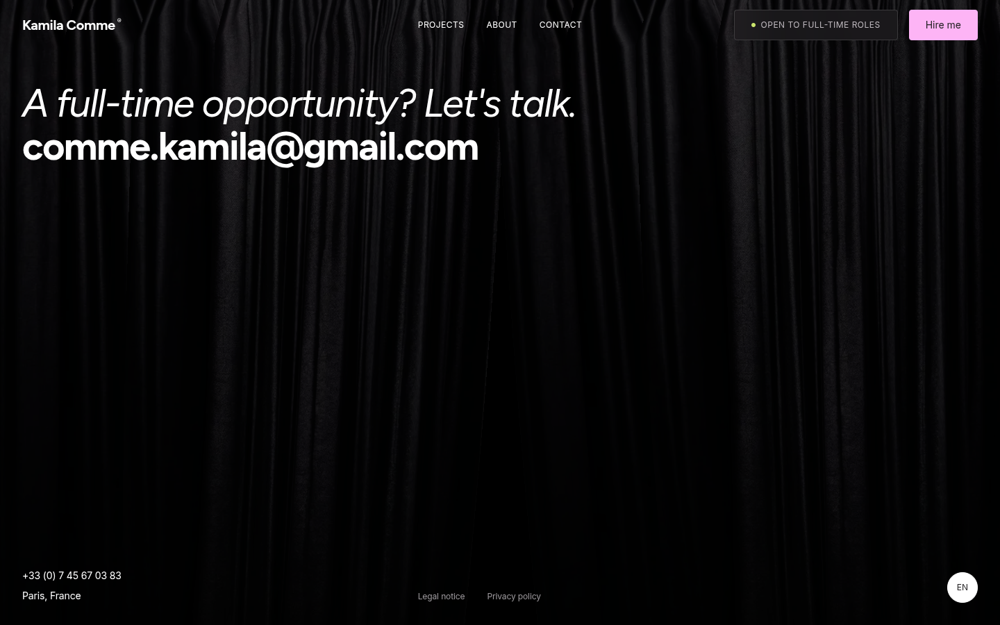

Open this file locally after pulling the review-artifact commit. Each pair shows the actual site after the Footer curtain settled: the approved running curtain on the left, then the same WebGL element and canvas frozen at its current scroll-derived progress on the right. French and English are shown at 1440×900 desktop and 393×852 mobile.
In each browser run, the preview changed the emulated preference to reduce, paused the existing curtain instance, waited, switched to no-preference and resumed its frame loop, then switched back to reduce. The original custom element and canvas remained in place throughout; the frame counter stayed constant while paused and advanced while resumed. The curtain texture loaded (1106px source), the canvas remained present, and the frozen frame did not snap away from its current progress (measured progress delta during the emulation handoff stayed below 0.01).
The static preview keeps the cloth at its current progress when motion is paused. Subsequent scroll updates use the same progress value and existing geometry. No application source was changed; a temporary browser-only adapter paused/resumed the live WebGL instance for this comparison.


